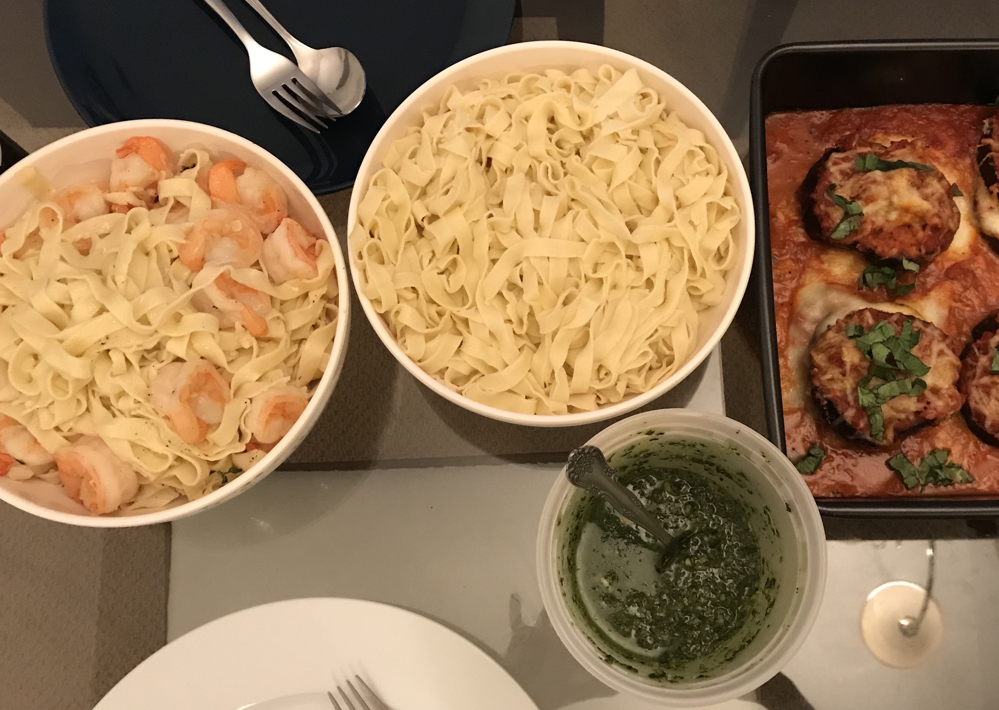

Basil Pesto

Jeff's friends Michael and Sharleen love making fresh pasta.
During one pasta making party, Jeff whipped up this simple basil pesto.
It goes perfectly with thicker noodles for a simple summer meal.
Ingredients
2 cups loosely packed basil leaves, washed and dried thoroughly
2 tablespoons toasted pine nuts
2 tablespoons freshly grated Parmesean
1/4 teaspoon minced garlic
1/4 cup plus 1 tablespoon extra-virgin olive olive
Freshly ground black pepper to taste
Instructions
In a food processor, combine the basil, pine nuts, Parmesean, garlic, and salt and puree.
While the motor is running, drizzle in the olive oil until incorporated.
Season with pepper to taste.
Use immediately or store in the refrigerator with a piece of plastic wrap placed right on the the surface of the pesto to prevent discoloration, for up to 3 days, or freeze for up to a month.